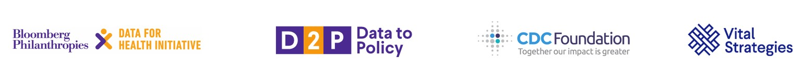

<!DOCTYPE html>
<html lang="en">
<head>
    <meta charset="UTF-8">
    <meta name="viewport" content="width=device-width, initial-scale=1.0">
    <title>Facilitators - D2P Lebanon</title>
    <link rel="stylesheet" href="styles.css">
</head>
<body>
    <nav class="navbar">
        <div class="nav-container">
            <div class="logo">D2P Lebanon - Unit 2</div>
            <ul class="nav-menu">
                <li><a href="index.html">Home</a></li>
                <li><a href="agenda.html">Agenda</a></li>
                <li><a href="facilitators.html" class="active">Facilitators</a></li>
                <li><a href="materials.html">Training Materials</a></li>
                <li><a href="logistics.html">Logistics</a></li>
            </ul>
        </div>
    </nav>

    <header class="page-header">
        <div class="container">
            <h1>Facilitators & Mentors</h1>
            <p>Expert team for the Lebanon D2P Training Program</p>
        </div>
    </header>

    <main class="container">
        <section class="facilitators-intro">
            <h2>Your Training Team</h2>
            <p>The Lebanon D2P program is led by experienced facilitators and mentors with deep expertise in health economics, policy analysis, and capacity building. Our team has supported D2P implementations across multiple countries and brings practical knowledge of economic evaluation methods for health policy.</p>
        </section>

        <section class="facilitators-grid">
            <div class="facilitator-card">
                <div class="facilitator-header">
                    <div class="facilitator-icon">CD</div>
                    <div class="facilitator-name">
                        <h3>Chandra Dhakal, PhD</h3>
                        <p class="facilitator-title">Health Economist, CDC Foundation</p>
                    </div>
                </div>
                <div class="facilitator-bio">
                     <p>Chandra Dhakal, PhD, is a health economist with the CDC Foundation's Data for Health Initiative, specializing in data-to-policy translation and capacity building for public health professionals. He has supported D2P program implementation in multiple countries and has expertise in training facilitation and mentorship. His work bridges rigorous quantitative methodology with real-world policy impact, translating complex econometric analyses into actionable evidence for decision-makers.

With a PhD in Applied Economics from the University of Georgia, complemented by an MS in Statistics, he specializes in causal inference, structural econometric modeling, and health economic evaluation. His research addresses critical questions at the intersection of public policy and population health: How do safety net programs affect vulnerable populations? What incentive structures can improve public health outcomes? How can we optimize resource allocation in low- and middle-income countries?</p>
                    <p>Chandra's areas of expertise include:</p>
                    <ul>
                        <li>Policy analysis and economic evaluation</li>
                        <li>Data analysis and visualization</li>
                        <li>Structural Econometric Modeling</li>
                        <li>Health Economic Evaluation (CEA, CUA, BIA)</li>
                        <li>Decision-Analytic Modeling (Markov, Microsimulation)</li>
                        <li>Training of trainers methodologies</li>
                        <li>Public health program evaluation</li>
                    </ul>
                    <p class="contact-info"><strong>Email:</strong> cdhakal@cdcfoundation.org</p>
                </div>
            </div>

            <div class="facilitator-card">
                <div class="facilitator-header">
                    <div class="facilitator-icon">LT</div>
                    <div class="facilitator-name">
                        <h3>Lara Tabac, PhD</h3>
                        <p class="facilitator-title">Director, GGP, Vital Strategies</p>
                    </div>
                </div>
                <div class="facilitator-bio">
                    <p>With over two decades of global experience spearheading grant-making and other public health initiatives within both non-profit and public sectors, Dr. Lara Tabac brings a wealth of expertise to drive impactful change. Proficient in orchestrating every facet of the grant-making process, from program inception to grantee selection, monitoring, and continuous improvement. Dr. Tabac excels in nurturing vital partnerships and fostering collaboration across diverse stakeholder groups to maximize our collective impact. My proven track record includes effectively building and leading teams to deliver tangible results. Recognized for my strategic acumen, adept problem-solving skills, and agility in navigating complex challenges, I'm passionate about connecting data and research to actionable insights. I am committed to promoting transparency, accountability, and driving innovation to address pressing global health issues.</p>      
                    </ul>
                </div>
            </div>


  <div class="facilitator-card">
                <div class="facilitator-header">
                    <div class="facilitator-icon">SM</div>
                    <div class="facilitator-name">
                        <h3>Sydney Mogotsi, MPH</h3>
                        <p class="facilitator-title">Project Manager, CDC Foundation</p>
                    </div>
                </div>
                <div class="facilitator-bio">
                    <p> Sydney Mogotsi, MPH, is a seasoned project and program management professional with more than a decade of experience leading global public health initiatives across Africa, Asia, and the United States. She currently serves as a Project Manager at the CDC Foundation, where she supports the Data for Health Initiative by providing technical assistance, grant management, and coordination for Ministries of Health, National Public Health Institutes, and international partners.
Sydney has extensive experience managing multi country health systems strengthening projects, and leading cross functional teams and stakeholders. Her background includes roles in global humanitarian programming, refugee and maternal and child health, COVID 19 response, and non communicable disease prevention. A Returned Peace Corps Volunteer, she brings a strong foundation in cross cultural engagement and community based public health. Sydney holds a Master of Public Health from the University of South Florida, a Master of Arts in Migration and Displacement from the University of Witswatersrand, and is certified as a Project Management Professional (PMP) and in Public Health (CPH).
</p>
                    
                </div>
            </div>
            

            

            <div class="facilitator-card">
                <div class="facilitator-header">
                    <div class="facilitator-icon">RK</div>
                    <div class="facilitator-name">
                        <h3>Rita Karam, PharmD, PhD</h3>
                        <p class="facilitator-title">Professor - Lebanese University - Faculty of Sciences and Medical Sciences</p>
                        <p class="facilitator-title">
Director -Quality Assurance of Pharmaceutical Products Program, Ministry of Public Health</p>
                    </div>
                </div>
                <div class="facilitator-bio">
                    <p>Dr. Rita Karam is a distinguished professor and consultant with over three decades of 
experience in pharmaceutical sciences, pharmacovigilance, and health policy. She holds a 
Pharm.D. from Saint-Joseph University in Beirut and a Ph.D. in Pharmaceutical Sciences 
and Biomedical Engineering from Claude Bernard University in Lyon, France.
Dr. Karam currently serves as Director of the Pharmaceutical Products Quality Assurance 
Program (QAPPP) at the Lebanese Ministry of Public Health. Her work focuses on 
strengthening pharmaceutical regulatory systems through drug registration reform, 
implementation of quality standards, advancement of pharmacovigilance systems, and the 
integration of health economics and health technology assessment (HTA) into decisionmaking processes. 
In pharmacovigilance, Dr. Karam played a leading role in establishing Lebanon’s national 
system and spearheaded the development of the Lebanese Good Pharmacovigilance 
Practices (GVP) Guidelines. She currently serves as the National Pharmacovigilance 
Coordinator and Head of the National Pharmacovigilance Center.
Beyond her regulatory contributions, Dr. Karam has been actively engaged in advancing 
health policy and universal health coverage (UHC) in Lebanon. She has contributed to 
national reform efforts aimed at improving equitable access to safe, effective, and 
affordable medicines, while promoting evidence-informed decision-making across the 
health system.
In the area of health technology assessment (HTA), she led the development of Lebanon’s 
National HTA Framework and contributed to shaping strategic directions for its 
institutionalization. Her work also focuses on strengthening data systems and evidencegeneration mechanisms to support priority setting, reimbursement decisions, and efficient 
resource allocation.
Dr. Karam is a full-time professor at the Lebanese University and has held several 
leadership roles within ISPOR, including former Chair of the ISPOR Arabic Network, 
former board member of the ISPOR Lebanon Chapter, and current member of the ISPOR 
HTA MENA Roundtable. She also serves as a member of the International Scientific 
Program Committee of Health Technology Assessment International (HTAi). She has 
published extensively on pharmacovigilance, HTA, health policy, and health system 
strengthening in lower-middle-income countries</p>
                    <p>Areas of expertise:</p>
                    <ul>
                        <li>Health technology assessment</li>
                        <li>Lebanese health policy and governance</li>
                        <li>Oncology cost analysis</li>
                        <li>Stakeholder engagement</li>
                    </ul>
                    <p class="facilitator-role"><strong>Mentorship:</strong> Primary mentor for Group 1 (HTA for Oncology Costs)</p>
                </div>
            </div>

            <div class="facilitator-card">
                <div class="facilitator-header">
                    <div class="facilitator-icon">CD</div>
                    <div class="facilitator-name">
                        <h3>Dr. Caroline Daccache</h3>
                        <p class="facilitator-title">Senior Lecturer, Faculty of Health Sciences,
University of Balamand</p>
                    </div>
                </div>
                <div class="facilitator-bio">
                    <p> Dr. Caroline Daccache is a Health Economist, Health Technology Assessment (HTA) Expert,
and Scientific Researcher with over two decades of multidisciplinary experience spanning
pharmaceutical research, academic instruction, and health policy development. She holds
a PhD in Health Technology Assessment and Health Economics from Maastricht University
(Netherlands), complemented by advanced degrees in Market Access for Health Products
and Ethics Applied in Health from the Lebanese University. Her academic and professional
trajectory reflects a sustained commitment to bridging rigorous economic evidence with
actionable health policy, particularly within low- and middle-income country (LMIC)
contexts.
Dr. Daccache has made significant contributions to health economics institutionalization in
Lebanon. She played a central role in developing the Lebanese Health Economic Evaluation
Guideline (LEEG), designed to standardize economic evaluations of health interventions in
Lebanon, which has been the subject of multiple peer-reviewed publications in leading
journals including Expert Review of Pharmacoeconomics & Outcomes Research and the
International Journal of Technology Assessment in Health Care. She served as a Reviewer
and Strategic Advisor to Lebanon's Ministry of Public Health on the establishment of a
National HTA Framework, and as a National Expert and Co-Author on a Precision Oncology
Policy Report led by the Swedish Institute for Health Economics (IHE) in collaboration with
the PhRMA MEA Oncology Working Group.</p>
                    <p class="facilitator-role"><strong>Mentorship:</strong> Primary mentor for Group 2 (Priority-Setting Mechanisms)</p>
                </div>
            </div>
        </section>

        <section class="mentor-teams">
            <h2>Mentorship Structure</h2>
            <div class="teams-grid">
                <div class="team-card">
                    <h3>Group 1: HTA for Oncology Costs</h3>
                    <p class="team-topic"><strong>Policy Brief:</strong> Strengthening Health Technology Assessment to Address Rising Oncology Costs in Lebanon</p>
                    <div class="team-members">
                        <h4>Primary Mentor:</h4>
                        <p>Rita Karam</p>
                        <h4>Participants (6 members):</h4>
                        <ul>
                            <li>Rita Karam (Group Lead)</li>
                            <li>Sabah Hammoud</li>
                            <li>Abeer Zeitoun</li>
                            <li>Aya Ibrahim</li>
                            <li>Lara Wehbeh</li>
                            <li>Zeina Farah</li>
                        </ul>
                    </div>
                </div>

                <div class="team-card">
                    <h3>Group 2: HTA Priority-Setting</h3>
                    <p class="team-topic"><strong>Policy Brief:</strong> Priority-Setting Mechanism for Health Technology Assessment in Lebanon</p>
                    <div class="team-members">
                        <h4>Primary Mentor:</h4>
                        <p>Caroline Daccache</p>
                        <h4>Participants (6 members):</h4>
                        <ul>
                            <li>Caroline Daccache (Group Lead)</li>
                            <li>Elie Matta</li>
                            <li>Zaynab Abbas</li>
                            <li>Nada Ghosn</li>
                            <li>Jana Said</li>
                            <li>Abbas Jouny</li>
                        </ul>
                    </div>
                </div>
            </div>
        </section>
           
    </main>
<footer class="footer">
        <div class="container">
            <div class="footer-content">
                <div class="footer-logos">
                    
                </div>
                <div class="footer-text">
                    <p>&copy; 2026 The Data to Policy (D2P) program, developed by Vital Strategies, CDC Foundation and the U.S. Centers for Disease Control and Prevention with support from the Bloomberg Philanthropies Data for Health Initiative</p>
                </div>
            </div>
        </div>
    </footer>
</body>
</html>
